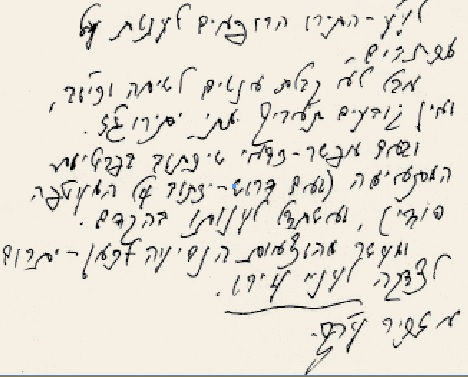

מאוצר המלך · #1063 · 2017-03-30
מענה כ”ק אדמו”ר מלך המשיח שליט”א לאחד שביקש מהרבי לקבלו ביחידות בחורף תשל”ח, לאחרי המאורע בליל שמיני עצרת
מענה כ”ק אדמו”ר מלך המשיח שליט”א לאחד שביקש מהרבי לקבלו ביחידות בחורף תשל”ח, לאחרי המאורע בליל שמיני עצרת
מענה כ”ק אדמו”ר מלך המשיח שליט”א לאחד שביקש מהרבי לקבלו ביחידות בחורף תשל”ח, לאחרי המאורע בליל שמיני עצרת

[= וכיוצא בזה], ואין קובעים תאריך מתי יתירו ג”ז [= גם זה].
ובאם אפשר – כדאי שיכתוב בפרטיות המתאימה (באם דרוש – יכתוב על המעטפה סודי), ואשתדל לענותו בהקדם. ומעשר מהוצאות הנסיעה לכאן – יתרום לצדקה לעניי עירו.
אזכיר עה”צ.